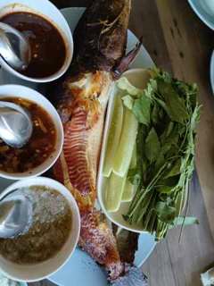
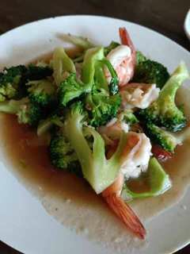
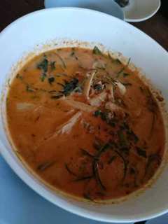

ตัวอย่าง HERO FastPage™ ที่ใช้ข้อมูลจริง รูปอาหารจริง และเมนูเต็มจากป้ายร้าน พร้อมแผนที่ การติดต่อ และการนำเสนอหลายภาษา
ตัวอย่างเมนูเด่น พร้อมภาพอาหารจริง



ข้อมูลร้าน • เมนูเต็ม • ภาพจริง • Google Maps • ติดต่อ • Mobile-first • 5 ภาษา